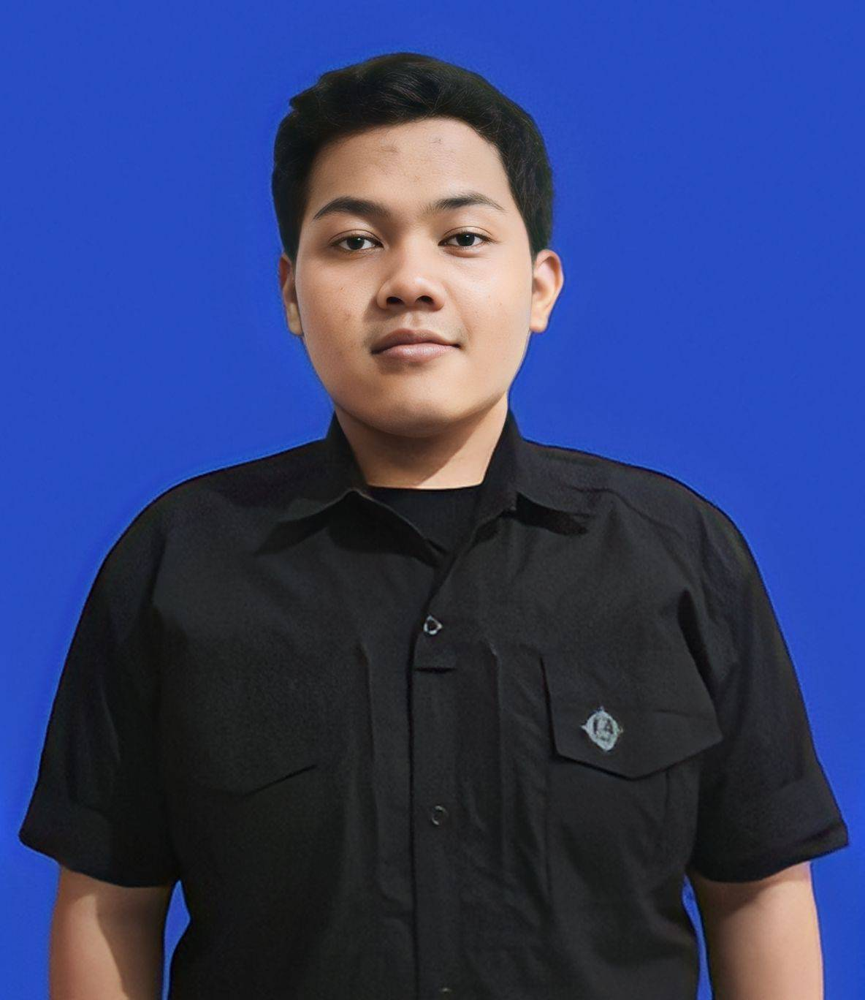

I am an automotive journalist with experience covering industry developments, technical topics, motorsport, and emerging automotive trends through field reporting, interviews, and research.
My work has provided direct exposure to how organizations communicate with customers, stakeholders, and the public. Beyond journalism, I am increasingly interested in corporate communication, public affairs, and business strategy.
GridOto & Tabloid OTOMOTIF
Detik Jabar
Student Press Organization
Email: ffauzym30@gmail.com
LinkedIn: linkedin.com/in/fahmyfauzy